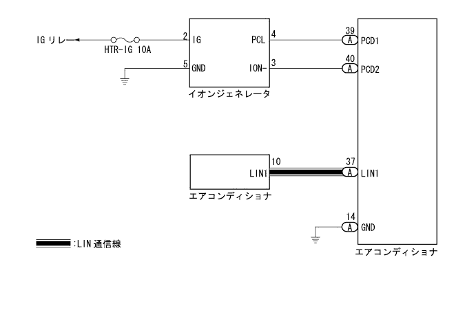
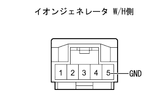
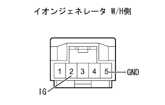
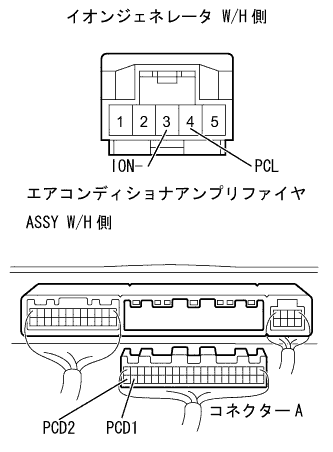
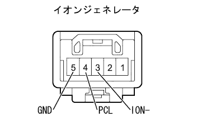
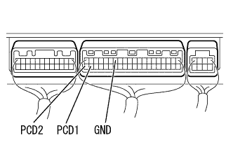

Heater & Air Conditioner System Plasmacluster Circuit |

| Step 1 | Inspect Wire Harness and Connector (Ion Generator - Body Ground) |
for reference.Disconnect the ion generator connector.
 |
Using SST (Toyota electrical tester), measure the resistance between the ion generator vehicle side wire harness connector terminal and body ground.
| Tester Connection (Terminal Symbol) | Condition | Standard |
|---|---|---|
| 5 (GND) - Body ground | Always | Below 1 Ω |
|
| ||||
| OK | |
| Step 2 | Inspect Wire Harness and Connector (Power Source - Ion Generator) |
for reference.Turn IG ON.
 |
Using SST (Toyota electrical tester), measure the voltage between each terminal of the ion generator vehicle side wire harness connector.
| Tester Connection ((Terminal Symbol) | Condition | Standard |
|---|---|---|
| 2(IG) - 5(GND) | Always | 11 to 14V |
|
| ||||
| OK | |
| Step 3 | Inspect Wire Harness and Connector (Ion Generator - Air Conditioner Amplifier Assembly) |
for reference.Disconnect connector A of the air conditioner amplifier assembly.
 |
Using SST (Toyota electrical tester), measure the resistance between each terminal of the vehicle side wire harness connector and between the terminals and body ground. (For Terminals of ECU, see)
| Tester Connection (Terminal Symbol) | Condition | Standard |
|---|---|---|
| 3(ION-) - A40(PCD2) | Always | Below 1 Ω |
| 4(PCL) - A39(PCD1) | Always | Below 1 Ω |
| 3 (ION-) - Body ground | Always | 10k Ω or higher |
| 4 (PCL) - Body ground | Always | 10k Ω or higher |
|
| ||||
| OK | |
| Step 4 | Inspect Ion Generator (ION- Terminal, PCL Terminal) |
Connect the ion generator connector.
Turn IG ON.
 |
Using SST (Toyota electrical tester), measure the voltage between each terminal of the ion generator connector.
| Tester Connection ((Terminal Symbol) | Condition | Standard |
|---|---|---|
| 3(ION-) - 5(GND) | Always | 11 to 14V |
| 4(PCL) - 5(GND) | Always | 11 to 14V |
|
| ||||
| OK | |
| Step 5 | Inspect Air Conditioner Amplifier Assembly (PCD2 Terminal, PCD1 Terminal) |
Connect connector A of the air conditioner amplifier assembly.
 |
Using SST (Toyota electrical tester), measure the voltage between each terminal of the air conditioner amplifier assembly connector. (For Terminals of ECU, see)
| Tester Connection (Terminal Symbol) | Condition | Standard |
|---|---|---|
| A40(PCD2) - A14(GND) | IG ON, blower switch LO, other than ion control mode → ion control mode (indicator display "ION") | 11 to 14V → 1V or less |
| A39(PCD1) - A14(GND) | IG ON, blower switch LO, other than clean mode → clean mode (indicator display "CLEAN") | 11 to 14V → 1V or less |
|
| ||||
| OK | ||
| ||